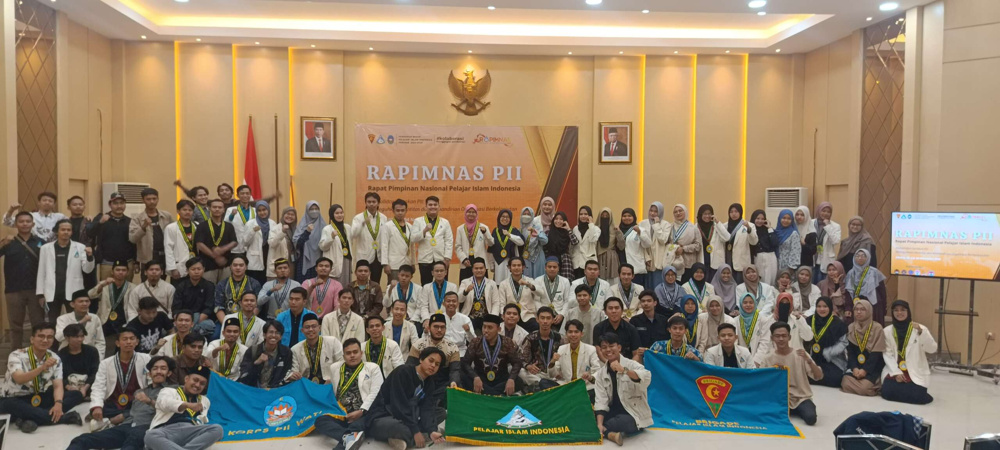

Seputar PII
Pelajar Islam Indonesia adalah organisasi massa Pelajar Islam tertua di Indonesia yang bergerak di bidang kepelajaran dan pengkaderan yang bertujuan terciptanya kesempurnaan pendidikan dan kebudayaan yang sesuai dengan syariat Islam bagi segenap bangsa Indonesia dan umat manusia. Berdiri pada Ahad, 4 Mei 1947 M/ 12 Jumadil Tsani 1366 H di Yogyakarta dengan tokoh pendirinya yaitu Joesdi Ghazali
Asal-usul PII
Kebijakan politik Belanda dan Jepang pada masa pra-kemerdekaan telah memberikan dampak yang sangat negatif bagi umat Islam. Salah satu dampak yang terasa di kalangan pelajar yaitu adannya perpecahan antara pelajar yang mengenyam pendidikan di sekolah umum dan pelajar (santri) yang mengenyam pendidikan di pesantren. Dalam hal kurikulum, pemikiran Belanda (Barat) yang sangat materialistis telah menjadi basis cara pandang pelajar didikan Belanda (sekolah umum). Mereka cenderung banyak meniru Barat dalam pola hidup maupun budaya pribadi seperti terlihat pada cara berpakaian, bersikap, dan bertingkah laku. Sisi positif yang dapat diambil dari hasil pendidikan Barat ini terletak pada metode yang modern karena memakai kurikulum dan kelas. Metode ini dapat memberikan keteraturan dan kedinamisan. Sementara sisi negatifnya terletak pada kemerosotan rasa patriotisme dan masuknya paham sekulerisme ke dalam pikiran para pelajarnya. Pada tanggal 25 Februari 1947, Joesdi Ghozali sedang beri’tikaf di Masjid Besar Kauman, Yogyakarta. Atas dasar refleksinya tentang situasi dan kondisi yang terjadi pada bangsa Indonesia saat itu, terlintas gagasan untuk membentuk suatu organisasi bagi pelajar Islam yang dapat mewadahi segenap lapisan pelajar Islam yang saat itu terpecah dan belum terkoordinasi.
Kontak
Seputar PII selengkapnya, silakan bisa menghubungi kami saputrasatriaraihan@gmail.com.